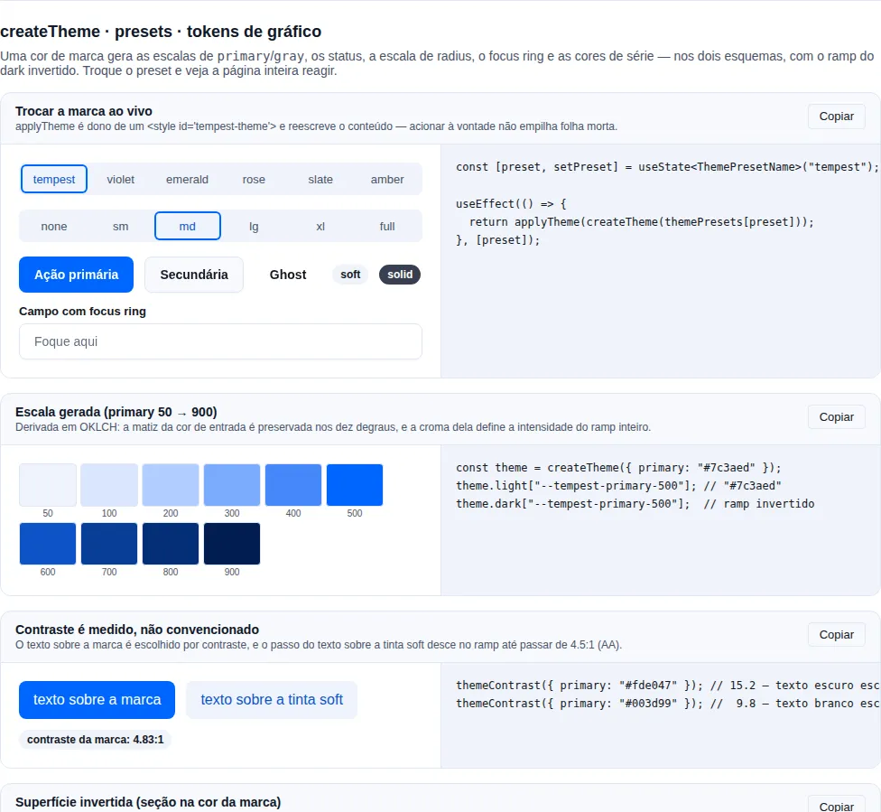

Tema (dark / light)
ThemeProvider decide o tema efetivo e escreve data-tempest-theme="dark" (ou "light") em <html>. Os tokens CSS --tempest-* reagem a esse atributo, então trocar o tema é trocar um atributo — nenhum componente precisa saber que o tema mudou. Veja os tokens em src/styles/colors.css.
Por que um atributo, e não class=\"dark\"?
Usar data-tempest-theme (em vez da convenção class="dark") evita colisão com classes do app e permite escopo parcial: você pode aplicar um tema diferente em uma subárvore (preview, portal, docs) sem afetar o resto da página. É a única forma de tema suportada pelo SDK.
Setup
Envolva a árvore com ThemeProvider. O modo padrão é "system", que segue a preferência do sistema operacional:
import { StrictMode } from "react";
import { createRoot } from "react-dom/client";
import { ThemeProvider } from "tempest-react-sdk";
import "tempest-react-sdk/styles.css";
import { App } from "./App";
createRoot(document.getElementById("root")!).render(
<StrictMode>
<ThemeProvider defaultTheme="system">
<App />
</ThemeProvider>
</StrictMode>,
);
Modos disponíveis: "light", "dark", "system". Em "system", o provider escuta prefers-color-scheme e reage a mudanças do SO em tempo real. A escolha do usuário é persistida em localStorage["tempest-theme"] (desative com storageKey={null}).
Toggle de tema
useTheme() lê e muta o tema. Um botão completo de alternância:
import { useTheme } from "tempest-react-sdk";
export function ThemeToggle() {
const { theme, resolvedTheme, setTheme, toggle } = useTheme();
return (
<div>
<button onClick={toggle}>{resolvedTheme === "dark" ? "🌙 Escuro" : "☀️ Claro"}</button>
{/* ou controle os três modos explicitamente */}
<select value={theme} onChange={(event) => setTheme(event.target.value as typeof theme)}>
<option value="light">Claro</option>
<option value="dark">Escuro</option>
<option value="system">Sistema</option>
</select>
</div>
);
}
O que cada campo significa:
theme: a preferência crua do usuário —"light","dark"ou"system".resolvedTheme: o tema efetivamente aplicado — sempre"light"ou"dark"(nunca"system").setTheme(next): grava a preferência (e persiste).toggle(): inverte oresolvedTheme. Em modo"system", alterna para o oposto do que está aplicado.
Use resolvedTheme para renderizar, theme para o seletor
Quando precisar decidir qual ícone/imagem mostrar, leia resolvedTheme (é sempre concreto). Reserve theme para refletir a escolha no seletor de três opções.
No-flash (evitar o flash do tema errado)
Há um problema clássico: o HTML pinta antes do React montar, então por um instante o usuário vê o tema padrão antes de o ThemeProvider corrigir. A solução é um script síncrono inline no <head>, antes de qualquer CSS, que aplica o atributo na primeira pintura.
themeInitScript() devolve exatamente esse trecho. Em um index.html Vite:
<!doctype html>
<html lang="pt-BR">
<head>
<meta charset="UTF-8" />
<!-- Aplica data-tempest-theme antes de pintar. Cole a saída de themeInitScript() aqui. -->
<script>
(function () {
try {
var key = "tempest-theme";
var def = "system";
var stored = localStorage.getItem(key);
var mode = stored || def;
var resolved =
mode === "dark" || mode === "light"
? mode
: matchMedia("(prefers-color-scheme: dark)").matches
? "dark"
: "light";
document.documentElement.setAttribute("data-tempest-theme", resolved);
} catch (e) {}
})();
</script>
</head>
<body>
<div id="root"></div>
<script type="module" src="/src/main.tsx"></script>
</body>
</html>
Se você renderiza o HTML por SSR/React (Next, Remix, etc.), injete via dangerouslySetInnerHTML para manter a string gerada em sincronia com o SDK:
import { themeInitScript } from "tempest-react-sdk";
export function Head() {
return <script dangerouslySetInnerHTML={{ __html: themeInitScript() }} />;
}
O script precisa ser síncrono e vir cedo
Não use defer, async nem mova o script para o fim do <body> — ele tem que rodar antes da primeira pintura, senão o flash volta. getInitialTheme() expõe a mesma lógica de resolução para quando você quiser o tema calculado em JS sem injetar o script.
Seguro para inline com qualquer opção
storageKey e defaultTheme entram no script escapados: <, >, &, U+2028 e U+2029 viram \uXXXX. Com JSON.stringify puro, uma storageKey contendo </script> fechava o elemento no parser de HTML e o resto virava outro script — o teste prova isso parseando o HTML resultante.
Customizando tokens
Os tokens --tempest-* são a única API de tema. Sobrescreva-os em qualquer ponto da cascata — um para o tema claro, outro dentro do seletor de tema escuro:
:root {
--tempest-primary: #ff3366;
--tempest-radius-md: 6px;
}
[data-tempest-theme="dark"] {
--tempest-primary: #ff6688;
}
Tokens são API pública
Como apps dependem desses nomes, mudar/remover um token é breaking change — por isso eles seguem o versionamento semântico do SDK.
createTheme — a marca inteira a partir de uma cor
Sobrescrever token por token funciona pra um ajuste pontual. Pra trocar a marca, são ~30 valores só de primary (dez degraus × claro/escuro, mais os aliases de hover/active/soft) — e é fácil errar a inversão do ramp no dark. createTheme gera tudo:
import { applyTheme, createTheme } from "tempest-react-sdk";
const theme = createTheme({ primary: "#7c3aed" });
applyTheme(theme);
Pronto: os 135 componentes passam a usar a marca nova, no claro e no escuro.
O que ele gera
const theme = createTheme({
primary: "#7c3aed", // escala 50→900 + hover/active/soft/foreground/focus-ring
gray: "#6b7280", // superfícies, bordas e texto
success: "#16a34a", // cada status vira -fg / -bg / -border / -solid
danger: "#dc2626",
chart: ["#7c3aed", "#0ea5e9", "#22c55e"], // --tempest-chart-1..N + -count (ver Charts)
radius: "lg", // "none" | "sm" | "md" | "lg" | "xl" | "full"
});
theme.light; // { "--tempest-primary-500": "#7c3aed", … } — a sua cor, exata
theme.dark; // idem, com o ramp invertido
theme.css; // ":root { … }\n\n[data-tempest-theme=\"dark\"] { … }"
Só as famílias que você passa são geradas — o resto continua vindo do colors.css do SDK. Um tema é um patch, não um fork da paleta.
O anel de foco não é derivado por transparência — e por que isso importa
O --tempest-focus-ring-color de um tema gerado é opaco, e o degrau da
rampa é medido, não fixo: o gerador começa no 500 e sobe a rampa até o
anel alcançar os 3:1 que a WCAG 2.2 SC 1.4.11 pede sobre as quatro
superfícies (--tempest-bg, --tempest-surface, -2, -3), nos dois
esquemas.
Um anel tinto não tem contraste próprio — ele tem o contraste do que estiver embaixo. Medido em doze marcas contra as quatro superfícies nos dois temas (96 pares):
| anel | pares acima de 3:1 |
|---|---|
500 com alfa 0.35 (o default até a 0.63.0) |
3 de 96 |
500 opaco |
58 de 96 |
| degrau escolhido por medição | 96 de 96 |
Opaco sozinho não resolve, e é isso que o degrau medido cobre: o roxo
#8100D7 passa a 7,20:1 no claro e reprova a 1,91:1 no escuro, e um
amarelo reprova a 1,43:1 no claro. Quando a marca já alcança o piso no 500,
o anel é a sua cor exata — a caminhada é fallback, não recolorização.
focusRingAlpha continua existindo para quem quer um anel translúcido sobre
um fundo que controla; abaixo de 1 ele emite um aviso em build de
desenvolvimento.
O indicador de estado selecionado é derivado junto — e nunca aceita alfa
createTheme também emite --tempest-selected-indicator, pelo mesmo método:
sobe a rampa da marca até a tinta alcançar 3:1 contra as quatro superfícies,
nos dois esquemas. É a tinta com que SegmentedControl, Command,
DropdownMenu e ContextMenu marcam o item ativo.
Ele é token próprio, e não um apelido do anel, por dois motivos. Foco e
seleção são estados diferentes — um app pode querer cores diferentes. E
focusRingAlpha não chega até ele: anel translúcido sobre um fundo que
você controla é escolha legítima; indicador de estado translúcido é o defeito
que o token encerra.
Detalhe e medição — inclusive por que --tempest-primary-soft (1,03:1 a
1,61:1 contra --tempest-bg em doze marcas) não serve — em
Estado selecionado.
O degrau 500 é exatamente a cor que você passou
A escala é ancorada no 500: a lightness da sua marca vira o ponto fixo e
as duas metades do ramp são reescaladas em volta dela. Sem isso o 500 era
forçado na lightness alvo da curva e #7c3aed voltava como #9161fe — mesma
matiz, mesma croma, re-clareado. Parece bom isolado e está errado de todo
jeito: a única cor que o designer entregou é justamente a que os botões
precisam ter. Marca muito clara (amarelo) ou muito escura (navy) simplesmente
ganha um trecho mais curto do lado apertado, e o ramp continua monótono.
Por que OKLCH e não HSL
A escala é derivada em OKLCH porque lightness em HSL não é perceptual: um amarelo e um azul com o mesmo L em HSL têm brilho visivelmente diferente, e é exatamente isso que faz uma paleta gerada parecer "quebrada" em algumas cores. Em OKLCH o degrau 500 de qualquer marca ocupa o mesmo lugar visual.
O passo de texto sobre a tinta soft é medido, não convencionado
--tempest-primary-on-soft não é fixo no 600: o SDK mede o contraste contra a tinta 50 e desce no ramp até passar de 4.5:1 (AA para texto). Isso não é preciosismo — o azul padrão só alcança 4.37:1 no 500 sobre a própria tinta, e um emerald gerado para em 4.41:1 no 600. Os dois reprovariam AA por um fio.
Presets prontos
import { applyTheme, createTheme, themePresets } from "tempest-react-sdk";
applyTheme(createTheme(themePresets.violet));
// ou partindo de um e ajustando
applyTheme(createTheme({ ...themePresets.emerald, radius: "full" }));
Presets disponíveis: tempest (o default do SDK), violet, emerald, rose, slate, amber. Cada um é um objeto de opções — dado, não CSS —, então dá pra guardar o nome escolhido em localStorage e resolver com getThemePreset(name) (que devolve undefined para nome inválido em vez de explodir no boot).
Trocando de tema em runtime
import { applyTheme, createTheme, getThemePreset } from "tempest-react-sdk";
import { useEffect, useState } from "react";
export function BrandPicker() {
const [brand, setBrand] = useState(() => localStorage.getItem("brand") ?? "tempest");
useEffect(() => {
const preset = getThemePreset(brand);
if (!preset) return;
localStorage.setItem("brand", brand);
return applyTheme(createTheme(preset));
}, [brand]);
return (
<select value={brand} onChange={(event) => setBrand(event.target.value)}>
{["tempest", "violet", "emerald", "rose", "slate", "amber"].map((name) => (
<option key={name} value={name}>{name}</option>
))}
</select>
);
}
applyTheme é idempotente: ele é dono de um <style id="tempest-theme"> e reescreve o conteúdo, então um seletor de marca pode ser acionado à vontade sem empilhar folhas mortas no <head>. O retorno é o disposer (usado como cleanup do effect acima).
Tema escopado numa subárvore
Passe selector/darkSelector no createTheme e id/target no applyTheme pra pintar só um pedaço da tela — útil pra preview de marca:
applyTheme(
createTheme({ primary: "#e11d48", selector: ".preview", darkSelector: '.preview[data-tempest-theme="dark"]' }),
{ id: "preview-theme" },
);
Sem JS: cole o CSS gerado
theme.css é texto. Se você prefere um tema estático (zero JS no caminho crítico), gere uma vez e cole no CSS global do app:
node -e "import('tempest-react-sdk').then(({ createTheme }) => console.log(createTheme({ primary: '#7c3aed' }).css))" > src/brand.css
Auditando o contraste da sua marca
import { contrastRatio, createColorScale, themeContrast } from "tempest-react-sdk";
themeContrast({ primary: "#fde047" }); // 15.2 — texto escuro foi escolhido automaticamente
const scale = createColorScale("#7c3aed");
contrastRatio(scale[500], "#ffffff"); // asserte no seu teste, se a marca é requisito
--tempest-primary-foreground (e --tempest-text-on-primary) é escolhido por contraste medido entre branco e o cinza escuro — hardcodar branco produziria botões ilegíveis em marcas claras (amarelo, lima, ciano).
As conversões de cor, avulsas
O createTheme faz o trabalho todo, mas as conversões que ele usa por dentro
são exportadas para quando você precisa de uma só — clarear um badge, gerar um
overlay, comparar duas cores no seu próprio teste:
import { hexToOklch, hexToRgb, hexToRgbaString, oklchToHex } from "tempest-react-sdk";
const { l, c, h } = hexToOklch("#7c3aed"); // luminosidade, croma, matiz
oklchToHex({ l: l + 0.1, c, h }); // 10% mais claro, mesma matiz e saturação
hexToRgbaString("#7c3aed", 0.12); // "rgb(124 58 237 / 0.12)" — overlay/hover
hexToRgb("#7c3aed"); // { r, g, b } em 0–1, para cálculo próprio
rgbToHex({ r: 0.49, g: 0.23, b: 0.93 }); // de volta para "#7c3aed"
Duas outras vêm do lado do contraste, e são as que o createTheme usa para
escolher um foreground legível em vez de fixar branco:
import { readableForeground, relativeLuminance } from "tempest-react-sdk";
relativeLuminance("#fde047"); // 0.83 — luminância relativa WCAG, a entrada do contrastRatio
readableForeground("#fde047"); // o foreground escuro: branco nesse amarelo é ilegível
Por que OKLCH e não HSL
Clarear em HSL muda a cor percebida: hsl(240 100% 50%) e
hsl(60 100% 50%) têm a mesma "luminosidade" declarada e brilhos
completamente diferentes aos olhos. OKLCH é perceptualmente uniforme, então
l + 0.1 clareia o mesmo tanto em qualquer matiz — é por isso que a escala
do createTheme sai regular em vez de embolar nos amarelos.
oklchToHex ainda reduz o croma até a cor caber no gamut sRGB, em vez de
devolver um hex recortado.
Superfície invertida (seção na cor da marca)
Hero, faixa de chamada, rodapé: uma seção pintada na cor da marca dentro de uma página clara. Os componentes dentro dela precisam inverter — botão primário claro com texto na cor da marca, texto claro, um anel de foco que se separe do fundo. Sobrescrever meia dúzia de tokens à mão deixa o resto da paleta com os valores da página, e é aí que a seção quebra.
A superfície é opt-in — a maioria dos apps nunca pinta uma seção na marca,
então ninguém paga por ela sem pedir. Carregue a folha uma vez e coloque
tone="inverse" no Section (ou o atributo data-tempest-tone="inverse" em
qualquer elemento):
import "tempest-react-sdk/styles/inverse.css";
import { Button, Section, SectionHeader } from "tempest-react-sdk";
export function FinalCta() {
return (
<Section tone="inverse" style={{ padding: 48 }}>
<SectionHeader
eyebrow="Pronto?"
title="Comece agora"
description="Sem cartão de crédito, cancele quando quiser."
/>
<Button>Criar conta</Button>
<Button variant="outline">Falar com vendas</Button>
</Section>
);
}
Pronto: o fundo vira a marca, o Button primário vira claro com texto na
cor da marca, o outline e o ghost ficam claros, o anel de foco, o Input, o
Card, o Badge e os textos muted/subtle passam a valer contra o fundo
invertido. 🚀

O que muda dentro da seção
O bloco [data-tempest-tone="inverse"] redefine todo token de cor que os
componentes leem — 96 deles: superfícies, bordas, os três níveis de texto, a cor
de ação e seus estados, soft, foco, indicador de seleção, a rampa
primary-50…900 (que Tag e Sidebar usam crus), os quatro status, as cores
de gráfico e de sintaxe, as sombras. A lista não é de memória: o teste lê
colors.css e reprova se surgir token de cor sem valor na superfície invertida.
Ficam de fora, de propósito, a rampa gray-* e o --tempest-neutral-on-solid
— o par do Badge/Alert neutro sólido. A rampa cinza é fixa entre os temas
(o bloco escuro também não a sobrescreve), e o par continua o que a página mediu.
Uma regra :where([data-tempest-tone="inverse"]) pinta o fundo e a cor do texto
no próprio elemento, com especificidade zero: o atributo sozinho já é uma seção
completa, e um background que você puser no mesmo elemento vence sem briga.
Contraste medido, não escolhido
Cada valor é derivado da marca e medido contra o fundo onde vai ficar, como
o resto do createTheme. Medido em 14 marcas (as doze do teste do anel de foco
mais dois navies):
| par | piso | pior caso |
|---|---|---|
| texto sobre as quatro superfícies e o brilho | 7:1 | ≥ 7 em todas |
texto muted sobre as quatro superfícies e o brilho |
4,5:1 | ≥ 4,5 em todas |
texto subtle sobre bg, surface e o brilho |
4,5:1 | ≥ 4,5 em todas |
| anel de foco e indicador de seleção | 3:1 | ≥ 3 em todas |
| rótulo do botão primário em repouso, hover e active | 4,5:1 | ≥ 4,5 em todas |
O brilho é o fundo levantado 0,1 em lightness OKLCH na direção do texto: uma
seção raramente é uma cor chapada. A landing que abriu o #409 põe um gradiente
radial de #1f3f8f a 55% sobre o navy #03184b, e o texto subtle medido só
contra o fundo chapado caía para 3,64:1 ali. Medindo o brilho junto, o mesmo
token sai a 5,01:1 sobre ele.
Medido no browser (Chromium, gallery buildada, 04/10/2026, 390 e 1280 px, tema da página claro e escuro — números idênticos nos quatro):
| marca | fundo | título | muted |
subtle |
anel | botão primário |
|---|---|---|---|---|---|---|
SDK (#0066ff) |
#042e75 |
12,71 | 9,60 | 7,28 | 6,95 | 12,71 |
landing (#03184b) |
#03184b |
16,99 | 10,62 | 6,63 | 6,31 | 16,99 |
O fundo é a sua marca — quando ela aguenta
O fundo é o 500 da sua marca sempre que ele carrega o esquema. Quando não
carrega, o gerador desce (ou sobe) a rampa um degrau por vez até carregar:
branco sobre o #0066ff mede 4,83:1, o que mal passa AA para o título e não
deixa espaço para muted e subtle passarem também. Por isso a superfície do
azul padrão do SDK é o 800 (#042e75), enquanto um navy fica no 500.
| marca | degrau do fundo |
|---|---|
#03184b, #1e2a5a, #111111, #FFD400, #a3e635, #fafafa |
500 — a própria marca |
#8100D7, #4f46e5 |
700 |
#0066ff, #dc2626, #ec4899, #f97316 |
800 |
#22d3ee |
400 · #14b8a6 300 |
A direção do texto segue o fundo: marca escura ganha texto branco, marca clara
(amarelo, lima) ganha texto escuro — a mesma escolha que o createTheme faz para
--tempest-primary-foreground. O color-scheme da seção acompanha, então
scrollbar, autofill e o popup de um <select> nativo seguem o fundo, não a
página.
Superfícies mais fundas, não mais claras
Na página, uma superfície elevada caminha na direção do texto (cinza sobre
branco, cinza mais claro sobre preto). Sobre uma marca de tom médio isso gasta
exatamente o contraste de que o texto precisa. Na superfície invertida, o
Card dentro de uma faixa navy é um navy mais fundo, e dentro de uma faixa
amarela um amarelo mais pálido: toda superfície carrega o texto pelo menos
tão bem quanto o fundo.
Valores sólidos, não alfa sobre branco
rgb(255 255 255 / 0.1) parece seguir qualquer fundo, e é por isso mesmo
que não tem contraste próprio — tem o contraste do que estiver embaixo. É o
defeito que o anel de foco translúcido tinha. Os tokens da superfície
invertida são sólidos e medidos; a tolerância a variação de fundo vem do
brilho medido acima, não do alfa.
Tema escuro
A superfície invertida é a mesma no claro e no escuro: os valores são cores literais, não referências à rampa da página. Uma faixa na cor da marca é a marca nos dois temas — e uma marca sem variante escura (o caso comum de landing) não precisa decidir nada.
Sem o import
A folha styles/inverse.css fica fora do colors.css, do tokens.css e do
styles.css: são 96 declarações que a maioria dos apps não usa (medido, elas
levavam a base tokens.css + scoped.css de 3,05 para 3,44 kB brotli para
todo mundo). Uma regra só para toda forma de importar o SDK: a superfície existe
quando essa folha — ou um tema gerado com inverse, abaixo — está carregada.
Sem nenhum dos dois, o atributo não casa com nada e a seção fica com os tokens
da página: legível, só não invertida. Medido no browser, um Section
tone="inverse" sem a folha mostra o título a 17,75:1 e a descrição a 7,69:1 no
tema claro (17,51 e 9,11 no escuro) — é uma seção comum.
Sua marca, com createTheme
A folha traz a superfície do azul do SDK. Para a sua marca, passe o gerador ao
createTheme — não precisa da folha:
import { applyTheme, createInverseSurface, createTheme } from "tempest-react-sdk";
const theme = createTheme({ primary: "#03184b", inverse: createInverseSurface });
theme.inverse?.["--tempest-bg"]; // "#03184b" — a sua marca é o fundo
applyTheme(theme);
Por que o gerador, e não inverse: true
Com uma flag, o createTheme teria de importar o gerador, e todo app que
gera um tema o carregaria. Medido com npx size-limit: { createTheme }
sozinho é 3,35 kB brotli, e com o gerador dentro era 4,86 kB. Passando a
função, só quem a importa paga.
Status e cores de gráfico que o tema nomeia (danger, chart…) entram na
superfície invertida também. Para escopar a outro seletor, use
inverseSelector. Sem inverse, o tema sai como sempre — dois blocos, e
theme.inverse ausente.
CSS estático colado
Se você cola a saída do createTheme num .css (veja
Sem JS), gere com inverse: createInverseSurface
para o arquivo trazer o bloco da sua marca.
De volta aos tokens da página
Um formulário de contato, um preço, um depoimento: às vezes um trecho dentro
da faixa precisa voltar a ser página — um Card branco num hero navy. Dentro da
superfície invertida todo descendente herda os tokens invertidos, então o Card
sai navy. Marque o trecho com data-tempest-tone="default" (ou
<Section tone="default">):
import "tempest-react-sdk/styles/inverse.css";
import { Button, Card, Input, Section, SectionHeader } from "tempest-react-sdk";
export function ContactHero() {
return (
<Section tone="inverse" style={{ padding: 48 }}>
<SectionHeader title="Fale com a gente" />
<Card data-tempest-tone="default" title="Contato">
<Input label="E-mail" name="email" />
<Button>Enviar</Button>
</Card>
</Section>
);
}
O Card volta a ser o da página — claro no tema claro, escuro no escuro, com
a sua marca e os seus overrides do :root. Medido no browser (Chromium,
04/10/2026): de 28 valores computados de um Card, um Input e um Button, 0
diferem do mesmo trio fora da faixa, no tema claro, no escuro e num subtree
escuro. Sem o atributo, 25 de 28 diferiam no claro e 18 de 28 no escuro.
Ponha o atributo na própria superfície (o Card) para ela flutuar sobre a
faixa. Num wrapper, o wrapper inteiro vira um bloco com o fundo da página — uma
regra :where() pinta background-color e color nele, com especificidade
zero, como na seção invertida.
Como funciona — e as duas alternativas medidas
Custom property herda do pai, então uma regra não consegue "pular" a seção e
ler o :root de novo — e escopar o bloco invertido para longe do trecho
(@scope (…) to (…), :not()) não muda nada: o trecho continua herdando o
que a seção declarou. Medido com @scope: os mesmos 25 de 28 no claro.
O que funciona é guardar o valor da página antes de a seção sobrescrever.
Todo elemento onde um tema é declarado (:root, [data-tempest-theme] e os
seletores do createTheme) copia cada token que a superfície redefine para um
gêmeo --tempest-default-*. Um var() dentro de custom property resolve no
elemento que o declara, então o gêmeo guarda o valor da página e atravessa a
seção intacto. O trecho lê os tokens de volta dos gêmeos.
| abordagem | custo (brotli) | quem paga | com override de marca no :root |
|---|---|---|---|
gêmeos --tempest-default-* (escolhida) |
+821 B no inverse.css |
só quem carrega a superfície | 0 de 28 diferem |
| um bloco por tema com os valores do SDK | +1257 B | só quem carrega a superfície | 3 de 28 diferem |
o trecho nos seletores do colors.css |
+15 B | todo app | 3 de 28 diferem |
O tokens.css e o styles.css saem com os mesmos bytes de antes. O
{ createTheme } sem inverse cresce 40 B brotli (3346 → 3386), o repasse
dos seletores ao gerador; o código que escreve as regras mora no gerador.
Números de npx size-limit na 0.74.0 + este PR; os de 1257 B e 15 B, de
zlib.brotliCompressSync sobre o CSS de cada alternativa.
Com o createTheme, as regras saem junto quando você passa
inverse: createInverseSurface, escritas para o seu selector e o seu
darkSelector — um tema escopado a #app também é restaurado.
Recap
<Section tone="inverse">oudata-tempest-tone="inverse"em qualquer elemento: fundo na marca, todo token de cor invertido.- Texto ≥ 7:1,
mutedesubtle≥ 4,5:1, anel ≥ 3:1 — medidos também sobre um brilho 0,1 mais claro que o fundo. - O fundo é o
500quando ele aguenta; senão o degrau mais próximo que aguenta. - Igual no tema claro e no escuro.
- Opt-in:
import "tempest-react-sdk/styles/inverse.css"para o azul do SDK, oucreateTheme({ primary, inverse: createInverseSurface })para a sua marca. Sem nenhum, a seção fica com os tokens da página. data-tempest-tone="default"(ou<Section tone="default">) dentro da faixa devolve os tokens da página — claro ou escuro, com a sua marca.NavbareAppBaraceitamtone="inverse"para a barra na cor da marca com botões e links dentro;tone="primary"só pinta o fundo — veja Barra na cor da marca.
Integração com o CSS do app + theme-color
Os componentes do SDK leem data-tempest-theme. Se o CSS próprio do seu app já chaveia o tema em outro atributo (ex.: [data-theme="dark"]), você não precisa de um effect de sincronização — passe um array em attribute e o provider escreve o tema resolvido em todos:
<ThemeProvider attribute={["data-tempest-theme", "data-theme"]}>
<App />
</ThemeProvider>
Para sincronizar a barra do navegador / status bar do PWA, passe themeColor — o provider atualiza <meta name="theme-color"> com a cor do tema resolvido (a meta tag precisa existir no <head>):
<ThemeProvider themeColor={{ light: "#1f7a3f", dark: "#0f1411" }}>
<App />
</ThemeProvider>
Por que isso existe
Antes, apps que misturavam CSS próprio + componentes do SDK escreviam um hook só pra espelhar o tema em data-theme e atualizar a meta tag. attribute (array) + themeColor cobrem os dois casos no próprio provider.
Escopo parcial
Passe target para aplicar o tema em uma subárvore específica em vez de <html> — útil para um preview ou portal que precisa de tema independente:
<ThemeProvider target={() => document.getElementById("preview")} defaultTheme="dark">
<Preview />
</ThemeProvider>
Recap
ThemeProviderescrevedata-tempest-themeno<html>(ou no elemento detarget); os tokens--tempest-*reagem sozinhos.- Modos:
"light","dark","system"— o último segueprefers-color-schemeao vivo. A escolha persiste emlocalStorage["tempest-theme"]. useTheme()dátheme(preferência crua),resolvedTheme(semprelight/dark),setThemeetoggle.- Inline o
themeInitScript()síncrono no<head>, antes do CSS, para eliminar o flash do tema errado. - Customize o visual sobrescrevendo os tokens
--tempest-*; usetargetpara tema em subárvore.
Veja também
- Componentes — todos consomem os tokens
- Estilos — catálogo completo dos tokens
--tempest-* - App Providers — montar o tema junto com Query e i18n